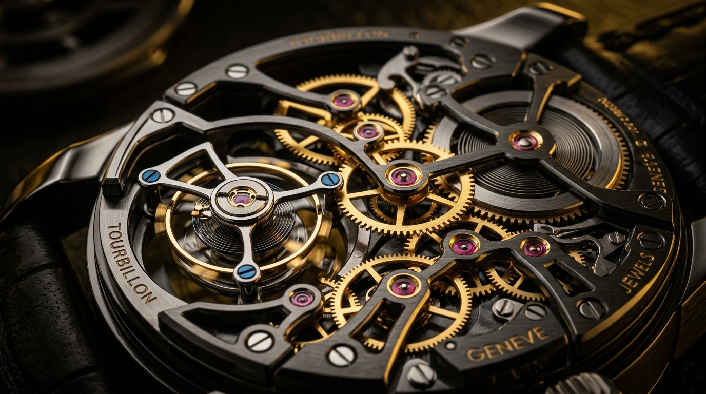

Built around the story of every item.
ChronoForge is presented as a specialist operations platform: a place where service teams can see what an item needs, who is responsible, what has happened and what still needs attention.
The interface mirrors the discipline of the workshop: precise, calm and intentional.
Make complex service work easier to understand.
The product concept brings operational information together without hiding it behind generic business software. The goal is a shared language between intake, workshop, quality and management.
By aligning real-time tracking, technical documentation, parts allocation, and customer updates into a unified interface, ChronoForge eliminates operational friction. Every artisan, horologist, and manager gains full transparency across the entire service lifecycle.
One record
The item stays connected to its service request, notes, status and history.
One workflow
Teams see the same stages instead of maintaining separate interpretations.
One source of visibility
Managers can understand workload and bottlenecks without chasing updates.
The product follows four rules.
Every visual and workflow decision is designed to support precision work rather than compete with it.
Precision
Use structured information where details matter: condition, measurements, requirements, ownership and quality checks.
Visibility
Make status and next actions obvious so work does not disappear into conversations or disconnected files.
Automation
Reduce repeatable administrative work while keeping people in control of important decisions and approvals.
Craft
Respect the environment it serves: high-value items, specialist teams and workflows where quality matters.
A modern operations layer behind exceptional craft.
The public website is intentionally premium, but the concept underneath is practical: authentication, role-based access, interactive workflow features, service tracking, tools and admin management working together as one product.
Calm surfaces. Deep interactions.
Cards respond to movement, imagery reveals depth, content enters progressively and the signature 3D orbital system creates a visual metaphor for connected work.

Motion is layered rather than decorative: depth suggests hierarchy, orbiting elements suggest connected workflow, and light suggests active state.
Ready to turn the concept into a working application.
The next layer can connect the experience to real authentication, databases, notifications, dashboards and role-based workflows.